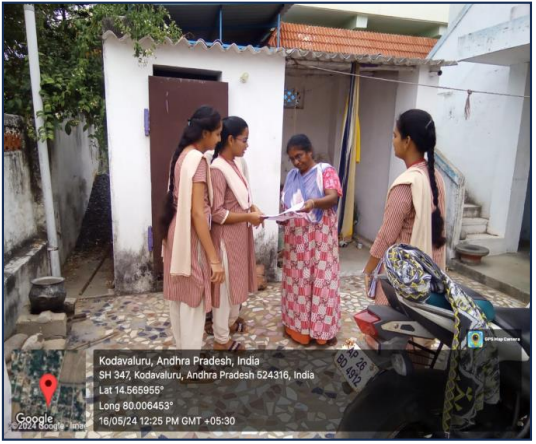
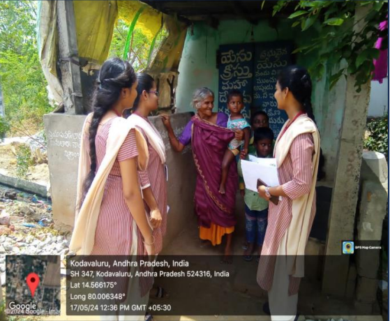

Before we start the project,we went to sachivalayam and took the permission to start the COMMUNITY SERVICE PROJECT.
"If you become your own scavengers, you will make your surroundings clean. It needs no less courage to become an expert scavenger than to win a Victoria Cross."
The Swachh Bharat Abhiyan is the most significant cleanliness campaign by the Government of India. Shri Narendra Modi led a cleanliness pledge at India Gate, which about thirty lakh government employees across the country joined. He also flagged off a walkathon at Rajpath and surprised people by joining in not just for a token few steps, but marching with the participants for a long way.
Next we visited the area to do the project in kodavaluru and we visited many houses in that area.Then we conducted a survey to find out the situations in the village.
we continued the survey and asked the people about their village.There is no proper drainage facility in their village.we noticed that they have no awareness about village development:
we have given awareness about village development.In this awareness program we discuss the following points: